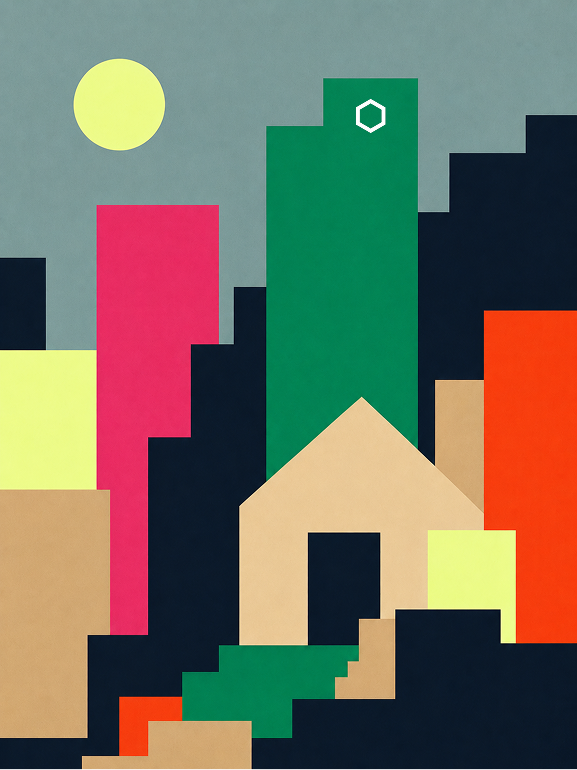
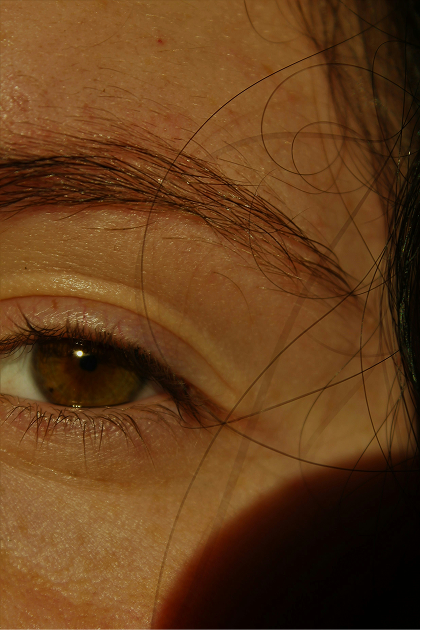
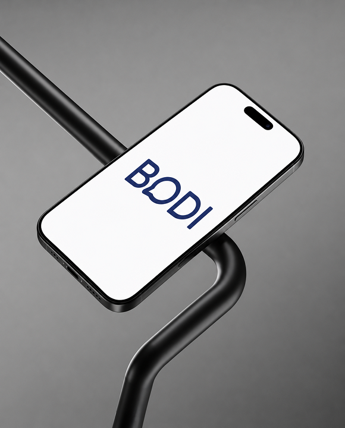

Façonner l'expérience
Designer UX/UI avec la passion et la mission
de créer des produits numériques qui savent simplifier la vie
de tous,
sans jamais perdre de vue l'humain.



Je me spécialise en recherche, conception et résolution de problèmes, tout en restant curieuse des autres disciplines du design. Cette polyvalence me permet de comprendre un projet dans son ensemble et de créer des expériences cohérentes.
sandrine.babineau@videotron.ca
(418) 956-3771